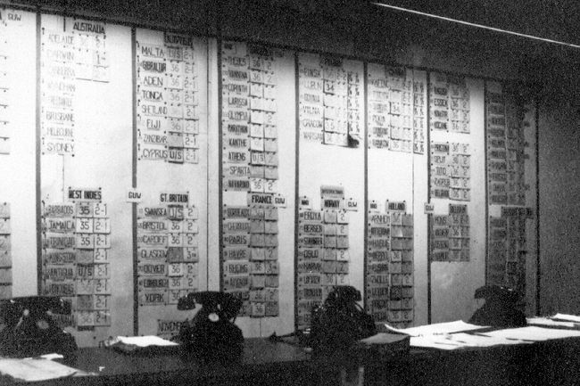
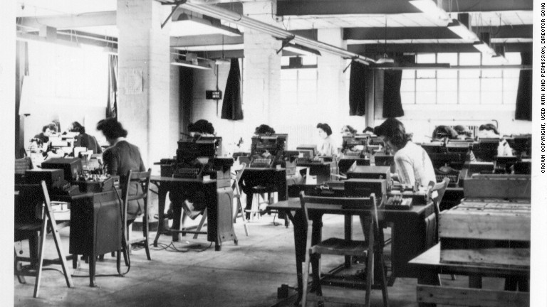
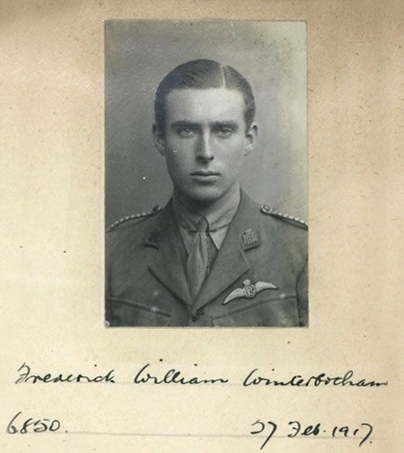
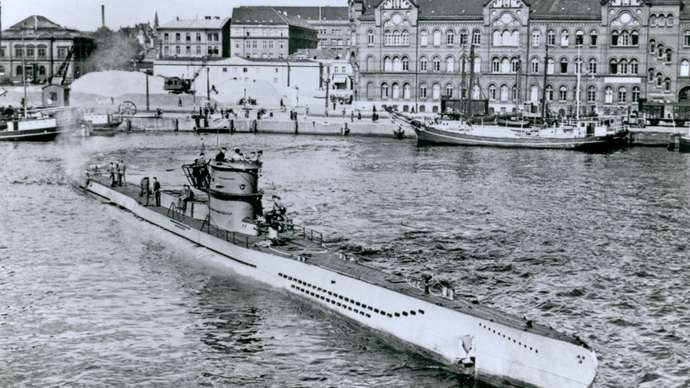

COMMUNICATION
|
“...the daily weather forecast… gives the British their first major breakthrough. Everyday the Atlantic weather is broadcast from the [German] U-Boats, and everyday it follows the same format: wind speed, atmospheric pressure, and temperature. Seeing the same message layout everyday gives Turing the idea of using what he calls 'cribs', educated guesses to what at least part of the message might say.” (Ashish, The Imitation Game: How Did The Enigma Machine Work?, 2019) First, the encrypted message is compared with the German plaintext from a previously decrypted message. Because the machine didn’t allow a letter to be encrypted as itself, if any of the letters matched up, then that crib wouldn’t be possible. This gives the Allies some information to which cribs don’t work. However, it would still take too long to go through the possibilities, so the Bombe is developed to go through the different permutations. “The operator sets each drum into position according to the enciphered crib text they’re testing. As the machine operates, it generates intermittent electrical circuits that run through every possible enigma setting. The goal is to find an open circuit, which means the Bombe has found a setting that converts all the cipher characters into plaintext without any errors.” (Ashish, The Imitation Game: How Did The Enigma Machine Work?, 2019)  The Bombe Control Room with the Bombe names, 2017, Jean Millar. In Enigma Machines, “if any stage character x were input and character y came out, then if character y had been input, instead character x would have come out… The settings of an Enigma machine were exactly the same for writing and reading messages, which simplified its practical use enormously. It also simplified the task of the Allies enormously.” (American Mathematical Society, Marian Rejewski and the First Break into Enigma) |
||||
|
Throughout the war, Allied western powers were concerned with “Soviet cipher security” and “German intercepts of Soviet dispatches”. This created serious hazards for the operation of Ultra like “the fluid state of the Eastern Front, where command posts were sometimes overrun and army commanders and their entire staffs captured. There were also the thousands of German agents and sympathizers behind Russian lines. The risks were simply too great!” These risks threatened Ultra’s secrecy in the war and the territory that the Soviet Union sought after. (Harold C. Deutsch, The Historical Impact of Revealing The Ultra Secret, 2006) Additionally, “For many of the young women at Bletchley, though, the removal of the clandestine veil came too late, with the majority of workers' parents having passed away before the decryption effort became public knowledge. Bourne, an 18-year-old naval recruit who was sent to one of the park's expansion locations in Eastcote—on the outskirts of London—was one of many who was never able to tell her loved ones about her contribution to the war. ‘You led two lives there,’ she recalls… ‘B Block was where we worked, surrounded by high walls, barbed wire and two naval marines guarding the place. If you could make your voice heard over the noise of 12 Turing Bombe machines, that was the only time you would speak about work—but you never would,’ she explains. ‘I never knew what any of my coworkers were doing, and vice versa, and my parents never knew a thing of it.’” (Charlotte Lytton, Lifting the veil of secrecy: Meet the female code-breakers of WWII, 2013)  Women of Bletchley Park, 2013, Lifting the Veil of Secrecy: Meet the Female Code-breakers of WWII. Ultra also made only a select few commanders “aware of the full significance of Ultra, and it was mostly used only sparingly, to prevent the Germans thinking their ciphers had been broken.” (Andrew Lycett, Breaking Germany’s Enigma Code, 2011) In an interview, a codebreaker recalled, “I never told [my wife about Ultra]. In fact, I never told anybody… The basic reason that the secret never leaked out is that everyone knows there was some codebreaking. The spectrum of codes is large. The heart of the ULTRA secret is that we were reading Germany’s most secret codes on a scale wholly unprecedented. That is what we never disclosed.” (U.S. Department of Defense, USAF Warrior Studies, 1987) “The war ended on 8 May, 1945 and on this date all the Bombe machines stopped running—the first since commencement of operations in 1940 and dismantling began the next day. However, it was decided to keep a few bombes running for research etc., and to retain 50 machines of various types, overhauled and stored away.” 1 Many other things were destroyed following the end of the war. Remaining Ultra operatives nor the Allied Powers had given “no public statement on just what is entailed, whether the files eliminated were routine matter or documents of such extraordinary confidentiality that it seemed foolhardy to permit them even to exist.” 2 1(John Jackson, The Enigma Busting Bombe Machine, 2019) 2(Harold C. Deutsch, The Historical Impact of Revealing The Ultra Secret, 2006) Bletchley Park kept its efforts secret for thirty-years until F.W. Winterbotham’s “publication of The Ultra Secret in 1974” where Bletchley Park veterans began to share their experiences with relatives and family who were unaware of their contributions during the war. Families could “learn more about what their relatives did, the younger children brought up on confessional social media often aghast at the idea of keeping secrets for 30 years.” (Bryony Norburn, The female enigmas of Bletchley Park in the 1940s should encourage those of tomorrow, 2015) “Until the publication of Winterbotham’s book, Rejewski had no idea that his ideas had provided the foundation for the routine decipherment of Enigma throughout the war.” After Poland was invaded, Rejewski fled to France, and later to Britain, but wasn’t recruited to Bletchley. (Simon Singh, The Code Book: The Science of Secrecy from Ancient Egypt to Quantum Cryptography, 1999)  Frederick William Winterbotham, 1917, Frederick William Winterbotham. It’s interesting how a major contributor to breaking the Enigma didn’t know about his impact, this shows how well the cryptanalysis efforts were kept secret. Many still debate about whether Ultra should’ve been revealed. “Ultra [was] history's best-kept secret, one [of] the more remarkable in that it was shared in some manner by more than ten thousand associated with Bletchley Park. Others continue to express wonder that it was ever deemed imperative to maintain such restrictions after the war ended.” (Harold C. Deutsch, The Historical Impact of Revealing The Ultra Secret, 2006) |
||||
|
Ultra didn’t always have victories. Once, a Nazi General Rommel disobeyed orders and attacked North Africa early thus confusing Allied troops of “what they might expect from this headstrong general and learned that, in dealing with him, they could not always be sure that Ultra supplied all the answers. At the time they had to wonder whether the Germans had gotten on to Ultra and were using it for deceptions of their own.” (Harold C. Deutsch, The Historical Impact of Revealing The Ultra Secret, 2006) After an ambush on German U-boats on Cape Verde a Nazi admiral began “to question if the navy's cipher had been compromised.” However, most Germans “were convinced that Enigma output could not be broken, so they used the machine for all sorts of communications—on the battlefield, at sea, in the sky and, significantly, within its secret services.” (Andrew Lycett, Breaking Germany’s Enigma Code, 2011) The Bletchley Park codebreakers focused on the Enigma encryptions by German U-Boats. “If the Allies could find out in advance where U-boats were hunting, they could direct their ships, carrying crucial supplies from North America, away from these danger zones.” 1 However, they were careful to ensure the Germans didn’t realize their code had been broken. “For example, the Enigma decipherments gave the locations of numerous U-Boats, but it would have been unwise to have attacked every single one of them, because a sudden unexplained increase in British success would warn Germany that its communications were being deciphered. Consequently, the Allies would allow some U-Boats to escape, and would attack others only when a spotter plane had been sent out first.” 2 1(Andrew Lycett, Breaking Germany’s Enigma Code, 2011) 2(Simon Singh, The Code Book: The Science of Secrecy from Ancient Egypt to Quantum Cryptography, 1999)  German U-218, 1941, U-Boat. There was a theory of gaining intelligence about the Enigma codes from German warships and weather ships. It was proven “correct when, in May 1941, the German weather ship München was attacked and found with Enigma code-books for June on board.” (Andrew Lycett, Breaking Germany’s Enigma Code, 2011) With deception, the Nazis believed their code was still unbreakable, so they didn’t prepare for leaked communication; the Allies took advantage of their ignorance. |
||||